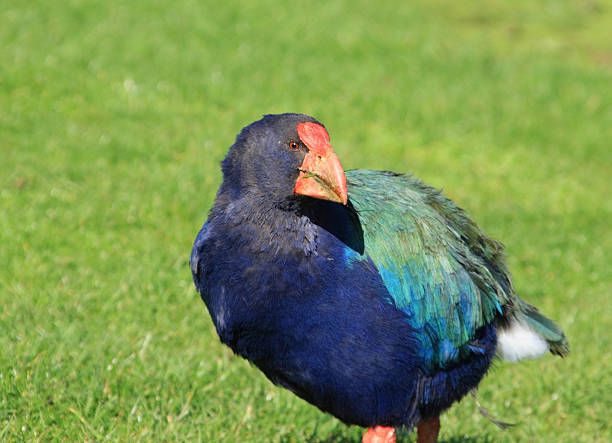

Rediscovered by a Persevering Doctor, the Flightless, Colorful Takahe, or 'Wanderer', Struggles to Survive
By R. V. Francis Smith
In New Zealand's rugged Fiordland a bird thought extinct for fifty years is struggling for survival. Behind the rare species in its fight for life is all the protective power of the Dominion Government. Rediscovery of this flightless bird, the large, brilliant-hued native rail which the Maoris called takahea, meaning "wandering at large," excited almost as much interest in New Zealand as discovery of a living passenger pigeon would arouse in America.
To zoologists and bird lovers throughout the world, reappearance of takahea, now called the takahe, was a notable event. They had a scientific name for the creature–Notornis hochstetteri, the first half of which means "bird of the south"–but they knew tantalizingly little about it and had considered it lost in the limbo of vanished species.
To the rediscoverer, Dr. G. B. Orbell, a physician of Invercargill, New Zealand, the dramatic sight of a takahe alive came as the reward of years of patient and systematic search. Only four of the birds were known to science when he made his discovery on the shore of a lake in what is now called Notornis Valley. Since August, 1898, there had been no authentic report of one being caught, or even seen.
